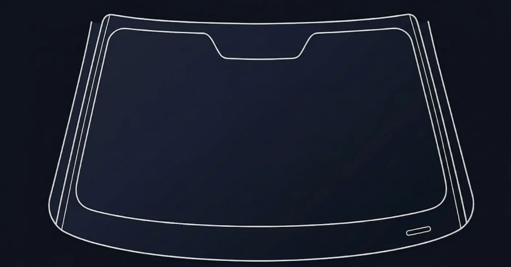
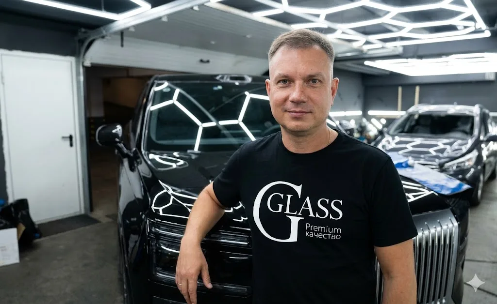
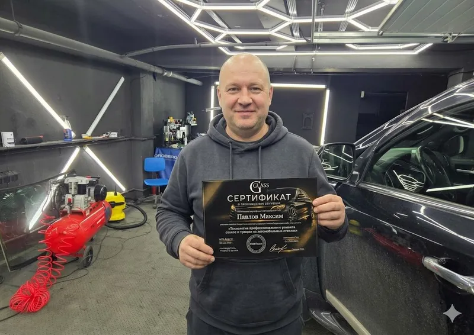
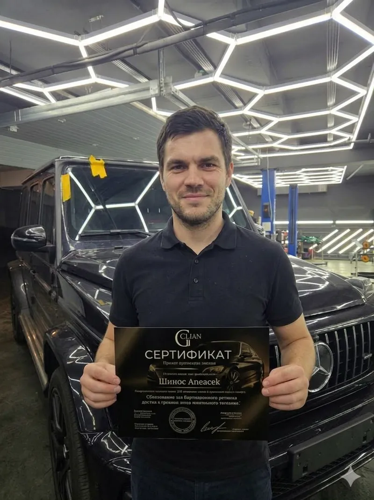
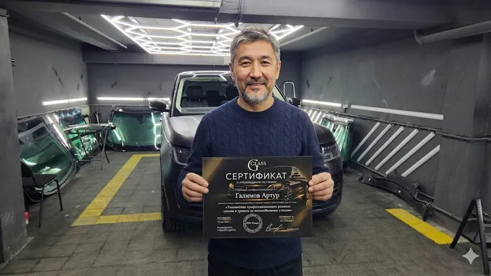
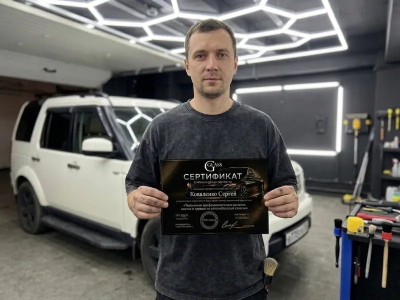

Научитесь зарабатывать на ремонте сколов и трещин автостёкол
5 дней индивидуального обучения в действующем детейлинг-центре Gglass в Москве
Освойте ремонт сколов, трещин и «пятаков» на автостёклах под контролем действующего мастера. Без групп. Без лишней теории. С практикой на реальных повреждениях и поддержкой после курса.


Обучает мастер, который каждый день работает с автостёклами
Вы учитесь не у теоретика, а у действующего мастера. Обучение проходит в реальной рабочей среде: инструменты, материалы, заказы, стандарты качества — всё как в настоящей работе.
Цель курса — не просто сертификат, а уверенный навык, который можно применять сразу после обучения.
Курс для тех, кто хочет новый навык, услугу или бизнес в автонише
Подойдёт новичкам, мастерам, владельцам сервисов и предпринимателям.
Понять, подойдёт ли курсСколы и трещины есть у клиентов каждый день — но деньги часто уходят конкурентам
Без технологии мастер рискует испортить стекло, отзыв и доверие клиента
Клиент приезжает со сколом, трещиной или «пятаком» и ждёт понятного решения. Если мастер не умеет оценить повреждение, подобрать полимер и аккуратно выполнить ремонт — заявка теряется.
Поверхностного обучения мало: ошибки видны сразу, а переделать стекло бывает невозможно.
После курса вы понимаете повреждение и знаете, как его ремонтировать
Не просто смотрите — сами выполняете работу руками
- диагностировать сколы и трещины
- определять, что можно ремонтировать, а что нет
- подбирать полимеры по задаче, вязкости и типу повреждения
- ремонтировать разные виды сколов
- останавливать и заполнять трещины
- работать с «пятаками» и сложными повреждениями
- объяснять клиенту стоимость и результат
- понимать, какой инструмент нужен для старта
Окупаемость — от 6 клиентов
Единоразовый платёж. Доступ к материалам остаётся.
- 10 ремонтов сколов
- или 6 ремонтов трещин
- или 5 сколов + 3 трещины
После этого каждый следующий заказ уже работает на вашу прибыль.
Навык, который можно быстро превратить в услугу
Работайте в сервисе, своей точке или на выезде
Для старта не нужен большой автосервис. Ремонт сколов и трещин можно запустить как отдельную услугу, допродажу в действующем бизнесе или мобильный формат.
Клиенту часто не нужна замена стекла — ему нужно сохранить родное стекло и остановить повреждение.
Обсудить запуск после курсаИндивидуальное обучение: всё внимание мастера — вам
Без группы, где один делает, а остальные смотрят
Вы работаете лично с мастером Gglass. Каждое движение, ошибка и решение разбираются сразу на практике.
Обучение проходит в действующем детейлинг-центре в Москве, где вы видите реальные материалы, инструменты, процессы и стандарты качества.
Записаться индивидуально5 дней практики: от полимеров до самостоятельного ремонта
Курс построен так, чтобы вы не просто поняли технологию, а закрепили её руками
- День 1Теория, полимеры, инструмент
Полимеры, вязкость, материалы, инструмент. Сразу практика и разбор тонкостей.
- День 2Ремонт сколов
Ремонт разных видов сколов.
- День 3Работа с трещинами
Остановка и ремонт трещин.
- День 4«Пятаки» и сложное
Работа с «пятаками» и сложными повреждениями.
- День 5Самостоятельная работа
Самостоятельная работа под контролем мастера: выбор полимера, способа ремонта и финальная отработка.
В стоимость входит не только обучение, но и поддержка на старте
5 дней индивидуальной работы с мастером — 29 990 ₽
Узнать ближайшие даты- 5 дней индивидуального обучения
- практика по сколам, трещинам и «пятакам»
- разбор полимеров, материалов и инструментов
- помощь с выбором оборудования
- консультации после обучения
- сертификат об окончании курса
- бесплатное продление, если вам нужно больше времени для уверенного результата
Вы не остаётесь один на один с инструментом после курса
Разбираем технику, старт, клиентов и первые шаги после обучения
Мастера, которые уже прошли обучение




Мы показываем не только как ремонтировать, но и как продавать услугу
Чтобы навык начал приносить заявки, его нужно правильно упаковать
Получить консультацию по старту- После курса вы понимаете:
- как объяснять клиенту ценность ремонта вместо замены
- какие фото «до/после» делать
- как отвечать на частые вопросы
- где искать первые заявки
- как встроить услугу в автосервис, мойку, детейлинг или выездной формат
- как формировать понятный прайс
Добавьте услугу ремонта автостёкол и не отдавайте клиентов конкурентам
Обучим владельца, мастера или сотрудника под задачи вашего бизнеса
Если к вам уже приезжают автомобили, ремонт сколов и трещин можно внедрить как допродажу. Вы закрываете запрос клиента на месте, повышаете средний чек и не отправляете его в другой сервис.
На обучении даём технологию, стандарты качества и понятный регламент работы с клиентом.
Обучить сотрудника сервисаХотите шире зайти в автостекольную нишу?
В Gglass есть отдельное обучение замене автостёкол
Ремонт сколов и трещин — сильный стартовый навык. Если хотите развиваться дальше, можно отдельно пройти обучение замене автостёкол.
Мы не смешиваем эти направления в один курс: у каждого навыка своя технология, инструмент и практика.
Узнать про обучение замене автостёколКурс по ремонту сколов и трещин — 29 990 ₽
Индивидуальное обучение 5 дней в Gglass, Москва
В цену входит практика, материалы на обучении, помощь с подбором инструмента, консультации после курса, сертификат и гарантия результата.
Если за 5 дней вам нужно больше времени, продлим обучение бесплатно.
- 5 дней индивидуальной практики
- Материалы и инструменты на обучении
- Помощь с подбором оборудования
- Консультации после курса
- Сертификат об окончании
- Бесплатное продление при необходимости
Записаться просто: без сложных анкет и долгих согласований
Оставьте заявку — мы подберём дату и формат под вашу цель
- Вы оставляете заявку
- Мы связываемся с вами
- Обсуждаем ваш опыт и цель
- Подбираем удобную дату обучения
- Вы приезжаете в Gglass в Москве и проходите курс
Ответы на вопросы перед обучением
Коротко о формате, практике, инструменте и поддержке
Можно без опыта?
Сколько длится обучение?
Будет практика?
Нужно покупать инструмент заранее?
Что делать после курса?
Есть поддержка?
Можно обучить сотрудника?
Выдаётся сертификат?
Что если 5 дней мало?
Можно потом учиться замене автостёкол?
Освойте ремонт автостёкол с мастером, а не по роликам из интернета
5 дней индивидуальной практики, поддержка после курса и понятный путь к первым заказам
Оставьте заявку — обсудим вашу цель: новая профессия, запуск услуги в сервисе или старт собственного дела.
Подскажем ближайшие даты, формат обучения и что нужно для начала.